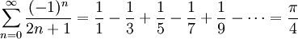

-
Name the five steps to top-down
problem solving as described in the text.
(It's okay if you can't remember the exact wording;
the concepts are more important.)
[5]
| Write______ |
Apprehend__ |
Design_____ |
Execute____ |
Scrutinize_ |
-
Name the five computer program flow abstractions described in the text.
[5]
| Sequence___ |
Selection__ |
Repetition_ |
Composition |
Parallelism |
-
Write "yes" or "no" next to each of the following six strings to
indicate if it is a legal Python identifier.
[6]
| numApples | __yes_ |
21st_birthday | __no__ |
prime-factor | __no__ |
| for | __no__ |
_illegal | __yes_ |
L337_hAX0rz | __yes_ |
-
Evaluate each of the following Python expressions,
or if it gives an error, indicate why.
[10]
| (5 % 12 == 2) or False and not False |
___False_________________ |
| 2 ** 3+16.2 // 5 |
___11.0__________________ |
| 0!=-0 and 0-0/0<0 |
___False_________________ |
| 'pi' + 2*'z' + 'a' |
___'pizza'_______________ |
| 2*range(3) |
___[0, 1, 2, 0, 1, 2]____ |
-
The following loop was intended to count down from ten to one, then print
"Blast off!".
What is wrong with the loop? How would you fix it?
[4]
counter = 10.0
while counter != 1.0:
print int(counter),
counter -= 1.0
print "Blast off!"
The loop finishes before printing '1': the output is
'10 9 8 7 6 5 4 3 2 Blast off!'
A quick fix would be to make the while loop condition be:
while counter > 0:
-
Recall that in Python int/float/bool parameters are essentially passed
by value, and lists/dictionary parameters are essentially
passed by reference. What is printed by the following block of Python
code?
[4]
def double_me(x):
x *= 2
y = 3.0
z = range(3)
double_me(y)
double_me(z)
print 'y =', y, ', z =', z
y = 3.0 , z = [0, 1, 2, 0, 1, 2]
The variable y points to an immutable object (the float 3.0) and is
roughly pass-by-value, so it is not affected by double_me().
The variable z points to a mutable object (the list range(3)) and is
roughly pass-by-reference, so it is changed by double_me().
The real scoop on Python parameter passing is
call-by-object
and is a bit more complicated; it has to do with Python's
object-oriented roots.
-
Leibniz' formula for calculating pi is an infinite series:

In the space below the next problem, write pseudocode for a
function procedure
leibniz() that returns an estimate of pi. A parameter should
be used to tell the function the maximum value of n to use in the sum.
For example, leibniz(3) should add terms up to and including
n==3.
[8]
Here's what I came up with:
- The parameter to the function is the maximum value of n to use.
- Initialize the sum to 0.
- For n from 0 up to and including the maximum value:
- Calculate (-1)**n / (2n+1) and add it to the sum
- Multiply the sum by 4 and return the result
-
On a separate sheet of paper, write a complete Python program,
declaring the procedure leibniz().
The body of the program should invoke leibniz() a few times
to test it out, using a different number of terms of the infinite series.
(You could also let the user interactively specify the parameter to
leibniz().)
[8]
Docstrings (including preconditions) are required for your whole
module and for each function.
You are not required to comment your code on this
exam, however if your code is incorrect, your comments may earn you partial
credit if they show good design thinking. Little partial credit will be
given for uncommented incorrect code.
My solution is linked here in a separate file.